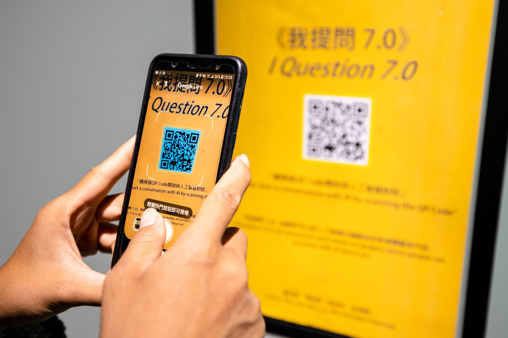
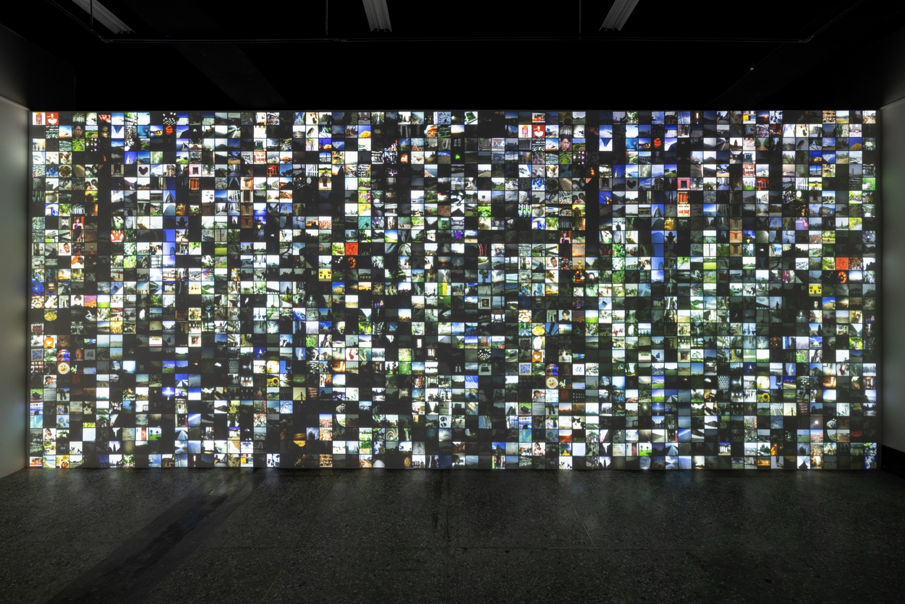
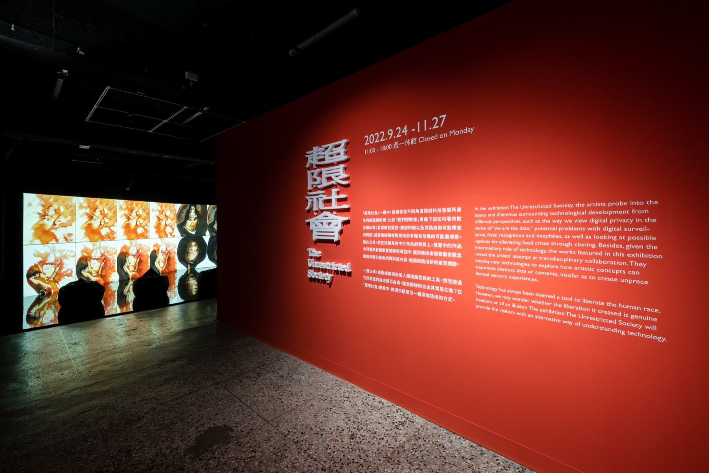
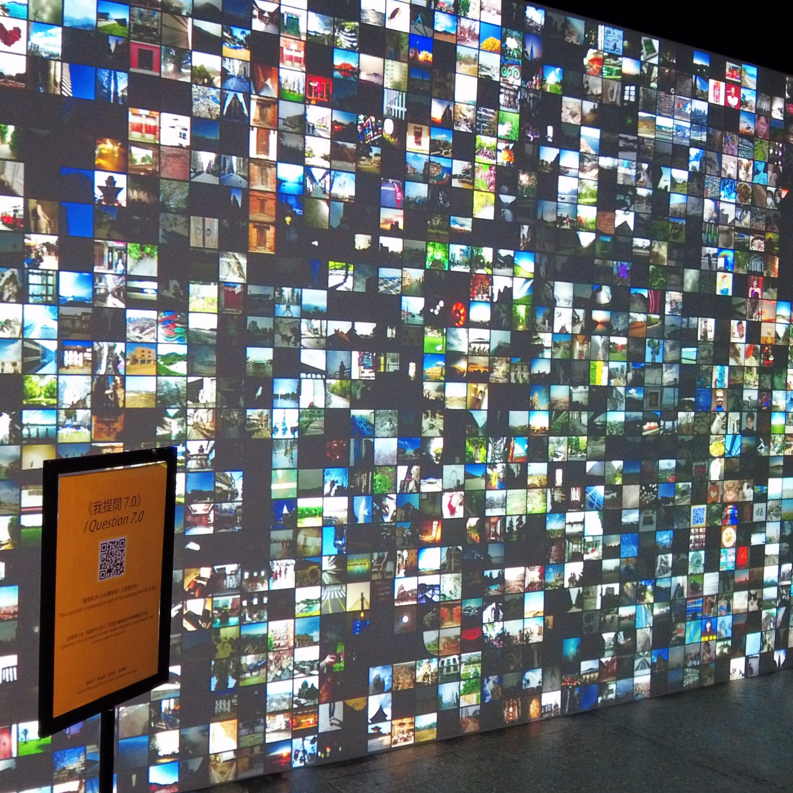
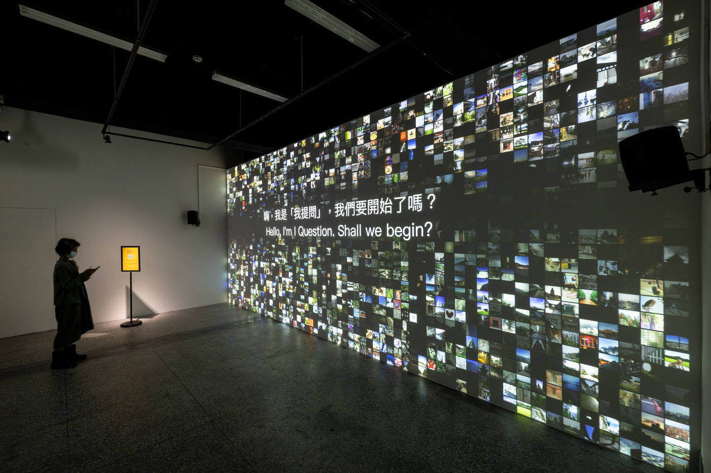

Group Exhibition — 2022
The Unrestricted
Society
인공지능이 관객과 만나 예술에 관해 대화를 나누는 인터랙티브 미디어 아트, ‘I Question’.
‘I Question’ — an interactive media artwork where an artificial intelligence meets and converses with its audience about art.
타이베이의 옛 공군총사령부를 개조한 문화실험 기지 C-LAB에서 열린 ‘초한사회(超限社會) The Unrestricted Society’에 슬릿스코프는 ‘I Question 7.0’으로 참여했습니다. 관람객은 핸드폰으로 QR 코드에 접속해 AI와 직접 대화를 나누고 자신의 사진을 올립니다. 관객의 사진은 작품의 일부가 되어 전시장 벽면 가득 파노라마로 시각화되고, 답이 없는 질문과 대답을 주고받는 사이 ‘우리가 생각하는 예술은 무엇인가’, 그리고 인간과 기계의 공진화에 대한 질문이 남습니다.
2018년 우란문화재단에서 시작된 I Question이 일곱 번째 버전으로 진화해 처음으로 해외 관객 — 중국어와 영어로 대화하는 타이베이의 관객들 — 을 만난 자리이기도 합니다.
전시 ‘The Unrestricted Society’는 ‘우리가 곧 데이터다’라는 관점에서의 디지털 프라이버시, 디지털 감시·얼굴 인식·딥페이크의 잠재적 문제, 복제를 통한 식량 위기 완화 가능성 등 기술 발전을 둘러싼 쟁점과 딜레마를 여러 각도에서 탐구합니다. 기술이 만들어낸 해방이 진정한 자유인지, 혹은 환상인지 되묻습니다.
‘I Question’ is an interactive media artwork in which an artificial intelligence meets and converses with its audience. The project began from a single question — ‘Can humans converse with AI about art?’ Since that first question, the AI has evolved by learning human answers. It poses questions with no fixed correct answer, offering a sense of what art might be. Audiences join the conversation via a QR code and post their own pictures, which become part of the work as a visualization of the images the AI has appreciated — leaving open the question of whether humans and machines can co-evolve.
- 작품
- Work
- I Question
- 웹사이트
- Website
- clab.org.tw · theunrestrictedsociety.clab.org.tw
- 함께 보기
- Related
- I Question — Wooran Foundation, 2018
C-lab, Taipei, Taiwan — 2022



